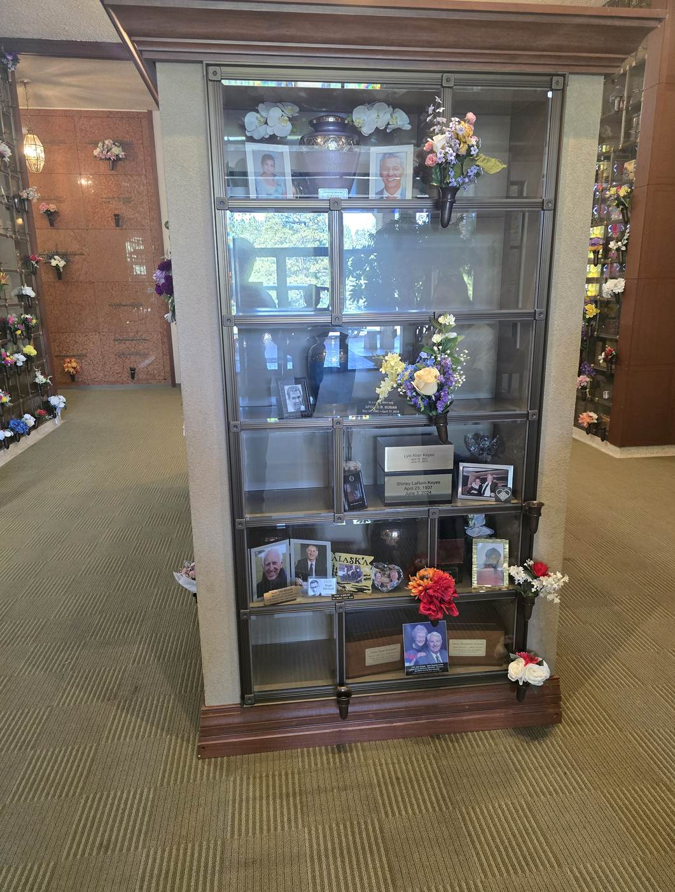
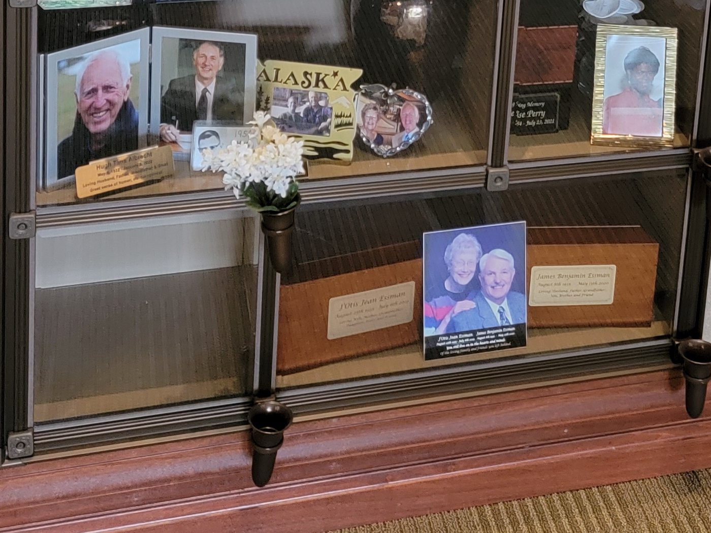
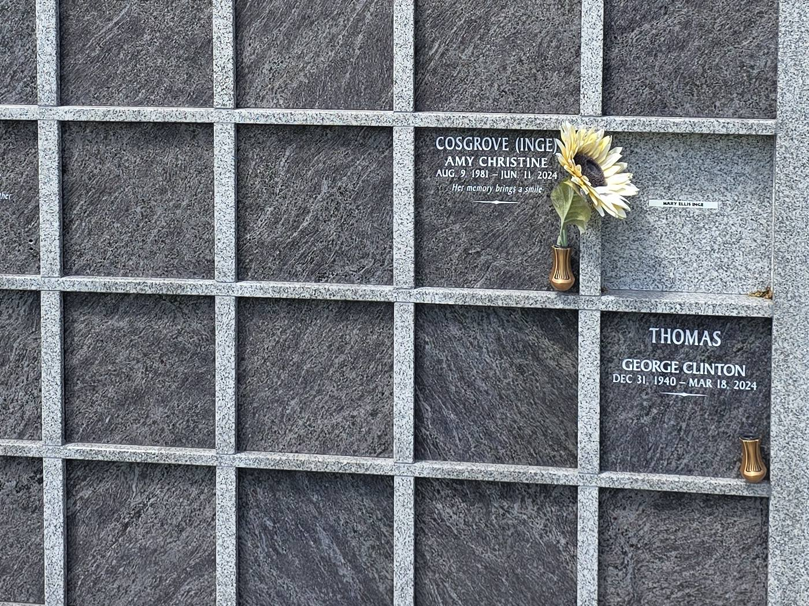
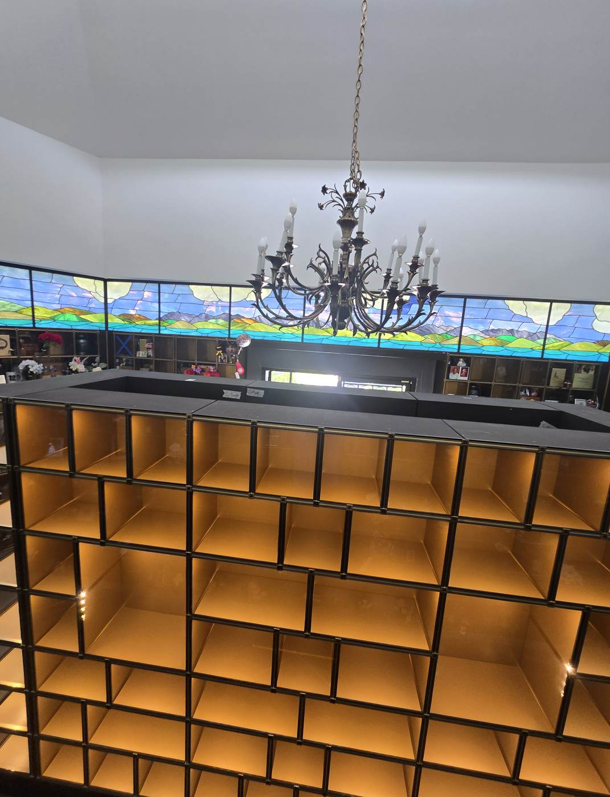
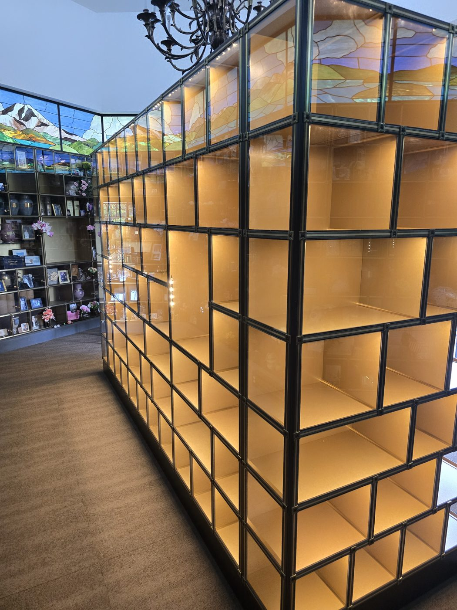
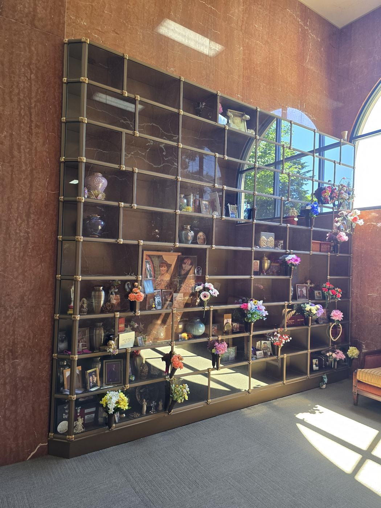
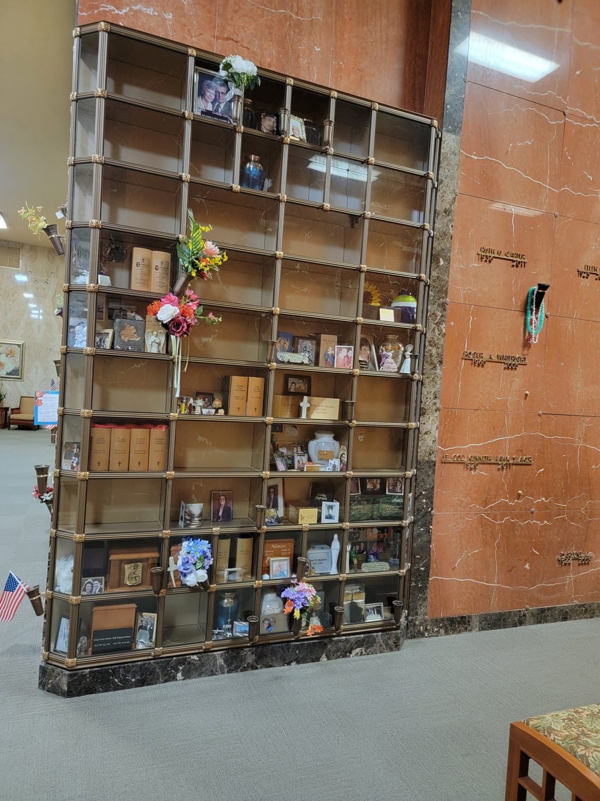

Glass-Front Niches
What a Glass-Front Niche Is

A niche is a compartment built to hold cremated remains inside a permanent memorial structure. The urn is placed inside and the niche is closed with a front panel. That panel is what you and your family see when you visit — and at the four locations in this guide it is glass.
So the inside is the memorial. The urn is visible. So are the photographs, keepsakes and small objects a family places beside it. Every one of the four locations here is indoors, in a heated, lit building you can visit out of the weather.
Where they are. The Eternal Light Columbarium and the new island of niches at the Mountain View Columbarium, and the Radiance and Serenity walls inside the Chapel of Memories mausoleum.
Prices are ranges, and they move. Within one wall the price depends on the row, the face and the size of the opening. Every range in this guide is computed from the same price and availability data behind our live niche maps, so it describes what is currently offered for sale — not a historic list. Your family service director confirms the exact space, its price and its availability in MIS before anything is written down.
Glass Front or Granite Front
Glass front
- You see the urn. The urn itself is part of what visitors see, so the urn you choose shows.
- Personal items are on display — photographs, keepsakes, small mementos, a flag, a rosary. The four locations here are full of them.
- All four are indoors, inside the Eternal Light and Mountain View columbaria and the Chapel of Memories mausoleum.
- Names are carried on a plate or an engraved strip on or in the niche, rather than cut into the front itself.
Granite front
- You see stone. The contents are not visible; the wall reads as one uniform granite face.
- The name is engraved into the granite or carried on a bronze plate fixed to it.
- Rock of Ages is an open-air granite courtyard under a pavilion; the Garden of Meditation is a stepped wall in a planted garden.
- The Garden of Meditation price sheet prints “NO PHOTOS ALLOWED” — a real difference from a glass front, where photographs are the norm.


Neither one is better. They are built to the same purpose and cared for the same way, and this guide makes no claim that either lasts longer, holds value better or needs less looking after. What families actually choose between is whether the urn and the mementos should be seen. Some want the display; others want the quiet of an unbroken stone wall.
The granite-front locations have their own guide: Granite Niches covers Rock of Ages, the Garden of Meditation and the Terrace Garden Memorial Path, with their prices and rights.
Eternal Light Columbarium
The Eternal Light Columbarium (ECL-1) is a freestanding four-sided structure with glass on every elevation — South, Front (North), West and East — six rows lettered A at the bottom to F at the top. The corners are solid, so no niche wraps around one. Openings vary a great deal in width, and two of the faces carry large two-row family units, which is why the range runs so wide.
Eternal Light niche
The lowest price is a single opening on a bottom row; the highest is a large two-row family unit. Most of what is left sits in between. Availability here is genuinely limited — ask us what is open on the face you like before you settle on one.
The sheet for this columbarium prints no price for a niche that has already sold, so the range above is built only from what is for sale today.

| Opening & closing, each | $875 |
| Recording fee, each | $235 |
| Endowment Care Fund | 10% |
| Inscription | none |
| Bronze scroll (#5108), optional | $785 |
| Vase with ring, optional | $370 |
| Sales tax — on the scroll and vase only | 10.4% |
The Eternal Light price sheet says nothing about how many people may be placed in one niche, so this guide says nothing about it either. Ask us and we will confirm it in MIS for the specific niche you are considering.
Open the Eternal Light niche map to see live availability and the exact price of any niche.
Mountain View Columbarium
A new island of glass-front niches stands in the centre of the octagonal room at the Mountain View Columbarium, under the stained-glass clerestory. It is glazed on all four sides: the Front Wall (West) and Back Wall (East) are the long faces, with shorter faces at the North and South ends. Rows run A at the bottom to G at the top, and the openings come in several widths and heights, including companion units that span two rows.


Mountain View glass-front niche
Every niche carries 2–4 rights of interment: the standard niche holds two, and the four large companion units at the centre of the long walls hold four. Two rights means two people may be placed in the same niche — usually a husband and wife — on one contract.
Prices step up by size and by row. The smallest openings on the lower rows are the least expensive; the four-urn companion units that span rows E and D are the most.
| Opening & closing, each | $875 |
| Recording fee, each | $235 |
| Endowment Care Fund | 10% |
| Inscription | none |
| Sales tax | none |
Open the Mountain View glass-front niche map to walk all four faces and see every price.
Radiance & Serenity Niches
The Chapel of Memories mausoleum holds two glass-front niche walls, both bronze-framed and set against the mausoleum’s marble. Radiance stands on the west side of the chapel, north of the crypt bank; Serenity is in the north-east corner, off the north hallway. Both run rows A at the bottom to K at the top. These are the least expensive glass fronts we have, and the two walls are largely spoken for — what is left is listed below.


Radiance RAD-1-1-ROW-SPACE
The sheet groups the wall into four size classes — Small, Large, X-Large and Family — the Family niches being the two double-height openings at the centre. Only the priced spaces are for sale; anything the sheet leaves blank is confirmed in MIS before it is quoted.
Serenity SER-1-1-ROW-SPACE
Serenity has two size classes, Large and Small, the Small being half the width of the Large. With ten spaces priced across the whole wall, the range is wide for a small amount of inventory — the specific space matters more here than anywhere else in this guide.
| Opening & closing, each | $875 |
| Recording fee, each | $235 |
| Endowment Care Fund | 10% |
| Inscription | none |
| Sales tax | none |
Both walls carry the same fee box, and it is the glass-front niche schedule — the same opening & closing, recording fee and Endowment Care Fund that apply at the Eternal Light and Mountain View columbaria. The Chapel of Memories crypts have their own, different schedule, and we do not carry one over to the other. Neither niche sheet states how many people may be placed in one niche, so this guide does not.
Open the Chapel of Memories map for both walls, space by space, with prices.
The Four at a Glance
| Location | What it is | Currently for sale | Price range | Other charges |
|---|---|---|---|---|
| Eternal Light Columbarium | Freestanding four-sided glass columbarium, six rows, indoors | 28 of 85 | $10,995–$82,500 | O&C $875 · recording $235 · E.C.F. 10% · no inscription fee · scroll $785 and vase $370 optional, taxed at 10.4% |
| Mountain View Columbarium | New glass-front island, four faces, 145 openings, rows A–G | 145 openings | $7,000–$48,000 | O&C $875 · recording $235 · E.C.F. 10% · no inscription fee · no tax |
| Radiance Chapel of Memories | Bronze-framed glass wall, west side of the chapel, rows A–K | 17 of 74 | $5,495–$12,095 | O&C $875 · recording $235 · E.C.F. 10% · no inscription fee · no tax |
| Serenity Chapel of Memories | Bronze-framed glass wall, north-east corner, rows A–K | 10 of 48 | $2,195–$16,495 | O&C $875 · recording $235 · E.C.F. 10% · no inscription fee · no tax |
Talking It Over
Ranges and counts in this guide are computed from the price and availability data behind our live niche maps and are re-checked against them automatically whenever this page changes. They describe what is currently offered for sale; a range moves as spaces sell. Every glass-front niche carries the same charges — opening & closing $875, recording fee $235 and a 10% Endowment Care Fund — and none of them carries an inscription fee or sales tax. The one exception is the optional bronze scroll and vase at the Eternal Light Columbarium, which are taxed. Granite-front niches and the Chapel of Memories crypts have their own, different schedules, and we never carry one across. Prices are subject to change without notice.